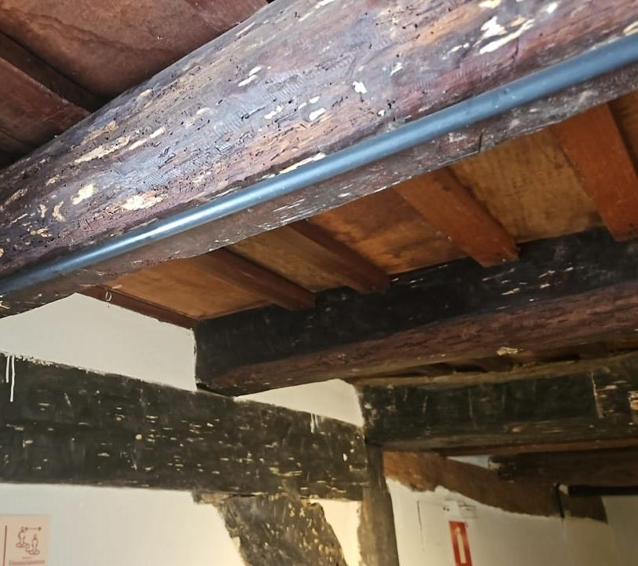

685 fichas, uma só história
Indumentária, arreios, ferramentas de ofício, mobiliário, documentos e fotografias que recontam o dia a dia das tropas.
Um acervo em expansão e em digitalização
Reunidas desde a fundação do museu, as peças do acervo fazem alusão à cultura tropeira: das cangalhas e arreios que equipavam as mulas, aos utensílios de cozinha, ferramentas de ofício, indumentária e documentos de época. Ao todo, o museu já soma 685 fichas catalográficas, organizadas por nome e código de registro, um trabalho que segue em qualificação para enriquecer cada ficha com dados históricos e técnicos mais completos.
Está em andamento um serviço abrangente de digitalização do acervo, que inclui o escaneamento fotográfico das peças em exposição, o registro de documentos e depoimentos orais, e a produção de material audiovisual: o primeiro passo para disponibilizar réplicas digitais fiéis no futuro museu virtual.
Abrir o catálogo interativo — 123 peças →
Já é possível navegar peça por peça pelas 123 primeiras imagens digitalizadas, com filtro por categoria, busca e ficha de detalhe de cada objeto.
Dezesseis famílias de objetos, 283 peças já descritas
A ficha de catalogação da Prefeitura de Itabira já detalha a função, a origem e a quantidade catalogada de dezesseis tipos de objetos do acervo. Clique em cada categoria para abrir a ficha completa, com a imagem disponível e os campos de catalogação, inclusive os que ainda estão em branco.
Descrições elaboradas a partir da ficha de catalogação da Prefeitura Municipal de Itabira e de painéis expositivos do próprio museu. A curadoria deve revisar cada texto antes da publicação oficial.
O que ainda não está em exposição
Além das peças expostas, centenas de outros objetos aguardam na reserva técnica. Parte do trabalho de digitalização em curso é justamente ampliar o que pode ser visto, cuidando da conservação dos originais.

Próximos recursos do acervo digital
Estas ideias fazem parte do projeto de museu virtual e ainda não estão em funcionamento. Aparecem aqui para que os parceiros do projeto acompanhem o que está planejado, com clareza sobre o que já existe e o que ainda depende de recursos e conteúdo real.
Busca e filtro do catálogo
Pesquisar peças por categoria, material ou palavra-chave diretamente no site, à medida que mais fichas individuais forem digitalizadas.
Fichas individuais por peça
Cada uma das 685 fichas catalográficas com sua própria página, número de tombo, procedência e imagem em alta resolução.
Tour virtual 360°
Reconstrução navegável das salas de exposição, com pontos de interesse interativos sobre peças específicas.
É pesquisador ou estudante?
Documentos digitalizados e acesso ao acervo restrito podem ser solicitados diretamente ao museu.
Falar com o museu →